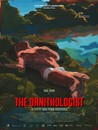
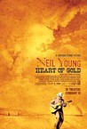
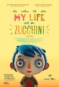
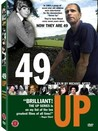

Movie Releases By Score
|  |
501.
The Ornithologist
Release Date:
June 23, 2017
Fernando, a solitary ornithologist, is looking for black storks when he is swept away by the rapids. Rescued by a couple of Chinese pilgrims, he plunges into an eerie and dark forest, trying to get back on his track. [Strand Releasing]
|

|
502.
El Dorado
Release Date:
June 7, 1967
Cole Thornton, a gunfighter for hire, joins forces with an old friend, Sheriff J.P. Hara. Together with an old Indian fighter and a gambler, they help a rancher and his family fight a rival rancher that is trying to steal their water.
|

|
503.
Sleeping Beauty
Release Date:
January 29, 1959
After being snubbed by the royal family, a malevolent fairy places a curse on a princess which only a prince can break, along with the help of three good fairies.
|

|
504.
Tales of the Grim Sleeper
Release Date:
December 26, 2014
Nick Broomfield digs into the case of the notorious serial killer known as the Grim Sleeper, who terrorized South Central Los Angeles over a span of twenty-five years.
|


|
505.
Knocked Up
Release Date:
June 1, 2007

In this film about a one-night stand with unexpected consequences. Judd Apatow takes comic look at the best thing that will ever ruin your best-laid plans: parenthood. (Universal)
|

|
506.
Distant Voices, Still Lives
Release Date:
September 11, 1988

The second film in Terence Davies's autobiographical series ('Trilogy', 'The Long Day Closes') is an impressionistic view of a working-class family in 1940s and 1950s Liverpool, based on Davies's own family. The first part, 'Distant Voices', opens with grown siblings Eileen (Angela Walsh), Maisie (Lorraine Ashbourne) and Tony (Dean Williams), and their mother (Freda Dowie) arranged in mourning clothes before the photograph of their smiling father (Pete Postlethwaite). Soon after, the family poses in a similar tableau, but for a happier occasion - Eileen's wedding. While relatives sing at her reception, Eileen hysterically grieves for her dad, and recalls happy times of her youth. Tony and Maisie's memories, however, are more troubled. Davies intermingles and contrasts scenes like the family peacefully lighting candles in church with the brutal man beating his wife and terrorizing his young children. In 'Still Lives', set (and filmed) two years later, the siblings are settled in life, but not all happily. For Eileen, relief from her drab existence comes only when singing at the pub. With his skillfully composed frames and evocative use of music in place of dialogue, Davies creates a lovely, affecting photo album of a troubled family wrestling with the complexity of love.
|

|
507.
Turtles Can Fly
Release Date:
February 18, 2005
This third feature from internationally acclaimed Iranian filmmaker Bahman Ghobadi is set in his native Kurdistan on the eve of the American invasion of Iraq. The devastation to this land and its inhabitants is revealed in the matter-of-fact perspective of the children and is equally displayed with every poignant detail of its unbearable nature. (IFC Films)
|

|
508.
The Departed
Release Date:
October 6, 2006
This gritty crime drama from director Martin Scorsese takes us into the lives of two cops: Colin Sullivan (Matt Damon), smart and unabashedly ambitious, appears to be on the fast track in the Massachusetts State Police Department's elite Special Investigations Unit, whose prime target is powerful Irish mob boss Frank Costello (Jack Nicholson). Billy Costigan (Leonardo DiCaprio), street-smart and tough, is purported to have a violent temper that costs him his badge and eventually lands him back on the rough streets of South Boston, where he is recruited into Costello's ranks. But neither man is what he seems and, as they work at cross purposes, they are plunged into a dangerous game of cat and mouse in which the stakes could not be higher. [Warner Bros.]
|

|
509.
April and the Extraordinary World
Release Date:
March 25, 2016

Paris, 1941. A family of scientists is on the brink of discovering a powerful longevity serum when all of a sudden a mysterious force abducts them, leaving their young daughter April behind. Ten years later, April (voiced by Marion Cotillard) lives alone with her dear cat, Darwin, and carries on her family’s research in secret. But she soon finds herself at the center of a shadowy and far-reaching conspiracy, and on the run from government agents, bicycle-powered dirigibles and cyborg rat spies. Undaunted, she continues her quest to find her parents and discover the truth behind their disappearance. [Gkids]
|

|
510.
Festival Express
Release Date:
July 30, 2004
A rousing record of a little-known, but monumental, moment in rock n roll history. Set in 1970, Festival Express was a multi-band, multi-day extravaganza that captured the spirit and imagination of a generation and a nation. (ThinkFilm)
|
|
|
511.
Spring, Summer, Fall, Winter... and Spring
Release Date:
April 2, 2004
Entirely set on and around a tree-lined lake where a tiny Buddhist monastery floats on a raft amidst a breath-taking landscape, this film is divided into five segments with each season representing a stage in a man's life. (Sony Pictures Classics)
|

|
512.
An Education
Release Date:
October 9, 2009
In the post-war, pre-Beatles London suburbs, a bright schoolgirl is torn between studying for a place at Oxford and the more exciting alternative offered to her by a
charismatic older man. (Sony Pictures Classics)
|

|
513.
Rat Film
Release Date:
September 15, 2017
Across walls, fences, and alleys, rats not only expose our boundaries of separation but make homes in them. Rat Film is a feature-length documentary that uses the rat--as well as the humans that love them, live with them, and kill them--to explore the history of Baltimore. "There's never been a rat problem in Baltimore, it's always been a people problem".
|
|
|
514.
Tinker Tailor Soldier Spy
Release Date:
December 9, 2011
The time is 1973. The Cold War of the mid-20th Century continues to damage international relations. Britain’s Secret Intelligence Service (SIS), a.k.a. MI6 and code-named the Circus, is striving to keep pace with other countries’ espionage efforts and to keep the U.K. secure. When things go awry, it's up to top lieutenant, George Smiley, a career spy with razor-sharp senses, to get things back on track. (Focus Features)
|

|
515.
Half Nelson
Release Date:
August 11, 2006
Dan, an idealistic inner-city junior high school teacher with a drug habit, and Drey, one of his troubled students, stumble into an unexpected friendship that threatens either to undo them or to provide the vital change they both need to move forward in their lives. [ThinkFilm]
|
|
|
516.
Vincere
Release Date:
March 19, 2010
In Vincere, the closely guarded story of Italian dictator Benito Mussolini's secret lover and son is revealed in fittingly operatic proportions. Thunderstruck by the young Mussolini's charisma, Ida Dalser gives up everything to help champion his revolutionary ideas. When he disappears during World War I and later resurfaces with a new wife, the scorned Dalser and her son are locked away in separate asylums for more than a decade. But Ida will not disappear without a fight. (IFC Films)
|

|
517.
Fargo
Release Date:
March 8, 1996
An unsuccessful car salesman (Macy) plans to wipe out his personal debts by hiring a pair of small-time, out-of-town crooks to kidnap his wife (McDormand), then collect the ransom from her dad (Presnell), a wealthy tightwad.
|

|
518.
Street Fight
Release Date:
February 22, 2006
This documentary chronicles the bare-knuckles race for Mayor of Newark, N.J. between Cory Booker, a 32-year-old Rhodes Scholar/Yale Law School grad, and Sharpe James, the four-term incumbent and undisputed champion of New Jersey politics. (Marshall Curry Productions)
|

|
519.
Unforgiven
Release Date:
August 7, 1992
In this Academy Award winning western, Eastwood and Freeman are down-on-their-luck outlaws who pick up their guns one last time in order to collect a bounty offered by the vengeful prostitutes of remote Big Whiskey, Wyoming.
|

|
520.
Love and Diane
Release Date:
April 16, 2003
Love is the 18-year-old daughter of Diane, a former crack addict who since losing her six children to foster care has managed to reassemble her family, however fragile the arrangement. Filmmaker Jennifer Dworkin spent five years with these women, riding an emotional roller-coaster, as past resentments inform each one's prospects for stability and happiness. (Film Forum)
|

|
521.
About Schmidt
Release Date:
December 13, 2002
Warren Schmidt (Nicholson) has arrived at several of life's crossraods all at the same time. With no job, no wife, and no family, he is desperate to find something meaningful in his thoroughly unimpressive life. He sets out on a journey of self-discovery, exploring his roots across Nebraska in a 35-foot motor home. (New Line Productions)
|
|
|
522.
Domestic Violence
Release Date:
January 30, 2002
This documentary by Frederick Wiseman profiles residents of a Tampa shelter for battered women.
|
|
|
523.
Hero
Release Date:
August 27, 2004
The time: two thousand years ago. The place: the violent dawn of the Qin dynasty. The story: the soon-to-be First Emperor of China is on the brink of conquering a war-torn land. Three opponents are determined to assassinate him and one loyal subject stands in their way. [Miramax]
|

|
524.
The Fabulous Baker Boys
Release Date:
October 13, 1989
The lives of two struggling musicians (the Bridges brothers), who happen to be brothers, inevitably change when they team up with a beautiful, up-and-coming singer (Michelle Pfeiffer)
|

|
525.
Hale County This Morning, This Evening
Release Date:
September 14, 2018
An inspired and intimate portrait of a place and its people, Hale County This Morning, This Evening looks at the lives of Daniel Collins and Quincy Bryant, two young African American men from rural Hale County, Alabama, over the course of five years. Collins attends college in search of opportunity while Bryant becomes a father to an energetic son in an open-ended, poetic form that privileges the patiently observed interstices of their lives. The audience is invited to experience the mundane and monumental, birth and death, the quotidian and the sublime. These moments combine to communicate the region’s deep culture and provide glimpses of the complex ways the African American community’s collective image is integrated into America’s visual imagination. [Cinema Guild]
|
|

|
526.
Neil Young: Heart of Gold
Release Date:
February 10, 2006
Neil Young: Heart of Gold is filmmaker Jonathan Demme's intimate musical portrait of legendary singer/songwriter Neil Young, filmed on the occasion of the world premiere of Young's "Prairie Wind" concert at Nashville's hallowed Ryman Auditorium. (Paramount Classics)
|
|
|
527.
Mudbound
Release Date:
November 17, 2017
Set in the post-WWII South, Mudbound follows the McAllan family, newly transplanted from the quiet civility of Memphis and unprepared for the harsh demands of farming. Despite the grandiose dreams of Henry (Jason Clarke), his wife Laura (Carey Mulligan) struggles to keep the faith in her husband's losing venture. Meanwhile, Hap and Florence Jackson (Rob Morgan, Mary J. Blige)—sharecroppers who have worked the land for generations—struggle bravely to build a small dream of their own despite the rigidly enforced social barriers they face. The war upends both families’ plans as their returning loved ones, Jamie McAllan (Garrett Hedlund) and Ronsel Jackson (Jason Mitchell), forge a fast but uneasy friendship that challenges the brutal realities of the Jim Crow South in which they live.
|
|

|
528.
My Life as a Zucchini
Release Date:
February 24, 2017
After his mother’s sudden death, Zucchini is befriended by a police officer, Raymond, who accompanies him to his new foster home, filled with other orphans his age. At first he struggles to find his place in this at times strange and hostile environment. But with Raymond’s help and his newfound friends, Zucchini eventually learns to trust and love, as he searches for a new family of his own. [Gkids]
|

|
529.
The Silence of the Lambs
Release Date:
February 13, 1991
In pursuit of one serial killer, ambitious FBI student Clarice Starling (Foster) is forced to enlist the aid of another notorious killer, the incarcerated ex-psychiatrist known as "Hannibal the Cannibal" Lecter (Hopkins).
|

|
530.
Hedwig and the Angry Inch
Release Date:
July 20, 2001
Adapted from the critically acclaimed off-Broadway rock theatre hit, Hedwig and the Angry Inch tells the story of an 'internationally ignored' rock singer, Hedwig, and her search for stardom and love. (Fine Line Features)
|

|
531.
The Last Seduction
Release Date:
October 26, 1994
Linda Fiorentino stars as the consummate femme fatale in this sexy thriller.
|

|
532.
The Conversation
Release Date:
April 7, 1974
Wiretapper Harry Caul (Gene Hackman) becomes concerned about recordings he made for a client.
|

|
533.
God's Own Country
Release Date:
October 25, 2017
Johnny Saxby (Josh O'Connor) works long hours in brutal isolation on his family's remote farm in the north of England. He numbs the daily frustration of his lonely existence with nightly binge-drinking at the local pub and casual sex. When a handsome Romanian migrant worker (Alec Secareanu) arrives to take up temporary work on the family farm, Johnny suddenly finds himself having to deal with emotions he has never felt before. An intense relationship forms between the two which could change Johnny's life forever.
|

|
534.
Kaili Blues
Release Date:
May 20, 2016
In a small clinic in the rain-drenched city of Kaili, two preoccupied doctors live ghost-like lives. One of them, Chen, decides to fulfill his dead mother’s wish and sets off on a train journey to look for his brother’s abandoned child. His partner in the clinic, a lonely old lady, asks Chen to find her old lover, and give him an old photograph, a shirt and a music cassette. But on the way, Chen passes a mysterious town called Dangmai, where time is not linear and people’s lives complement each other. Here, Chen experiences the past, present and future. It’s unclear whether this world is the doctor’s dream, or the other way around. [Grasshopper Film]
|

|
535.
The Intruder
Release Date:
December 23, 2005
A mysterious and enthralling story about fresh starts and the possibility of escape, both a tale of inner and outer traveling. The film follows the global travels of an enigmatic 68-year-old man (Subor) who goes looking for a long-lost son and a new organ to replace his ailing heart. (Wellspring)
|

|
536.
Forbidden Lie$
Release Date:
April 3, 2009
Norma Khouri is a thief, a saint, a seductress or a sociopath, depending on who you talk to. Men want to marry her, Islamic extremists want to kill her, and the global publishing industry wishes she would just disappear. Khouri won fame and fortune with her 'true story' Forbidden Love, about a shocking honor killing in Jordan. The book was a runaway bestseller, translated into multiple languages and Khouri became the toast of the literary world. That was until July 2004, when esteemed Sydney Morning Herald journalist Malcolm Knox exposed her book as a work of fiction. Weaving between the literary salons of London, the mosque-lined vistas of Jordan, the beach side suburbs of Queensland and the seamy Chicago back streets of Norma's dubious past, Forbidden Lie$ pits Norma's tale against the stories of the those who believe she duped them: the publishers, the FBI, her next door neighbor...even her husband. But the most compelling character of all is Norma who, encouraged by director Anna Broinowski, journeys through every shade of gray that separates fact from fiction. Dir. Anna Broinowski. (Roxie Releasing)
|

|
537.
Behemoth
Release Date:
January 27, 2017
Beginning with a mining explosion in Mongolia and ending in a ghost city west of Beijing, political documentarian Zhao Liang’s visionary new film Behemoth details, in one breathtaking sequence after another, the social and ecological devastation behind an economic miracle that may yet prove illusory. [Grasshopper Films]
|
|
|
538.
The Sun
Release Date:
November 20, 2009
In the summer of 1945, with Tokyo under siege by American forces, Japanese Emperor Hirohito remains in seclusion from the world in an underground bunker. Held by his people as a deity, the incarnation of the Sun God, Hirohito is sheltered from the devastation that surrounds him as he is waited on hand and foot by his servants. After the razing of Tokyo and bombings of Hiroshima and Nagasaki, Hirohito finally meets with General MacArthur. And, in August, millions of Japanese citizens are stunned to hear the voice of their Emperor for the first time as he commands his people to cease all fighting. The address saves the lives of countless Japanese and Allied forces alike, but the victorious powers insist that Emperor Hirohito appear before a military tribunal for war crimes. Sokurov’s fascinating film chronicles the events leading up to Hirohito’s monumental speech, the historic renunciation of his divine status and his meetings with General MacArthur, who advises his own President not to declare the Japanese leader a war criminal. Featuring a power-house central performance by Issey Ogata, Sokurov creates an intimate human portrait of the infamous Emperor Hirohito as he faces the unraveling of his own power, and the tragedy that besets his country. (Lorber HT Digital)
|
|
|
539.
The Past
Release Date:
December 20, 2013
Following a four year separation, Ahmad (Ali Mosaffa) returns to Paris from Tehran, when his estranged French wife, Marie (Bérénice Bejo), asks him to finalize their divorce procedure so she can marry her new boyfriend Samir (Tahar Rahim). During his tense brief stay, Ahmad discovers the conflicting nature of Marie's relationship with her teenage daughter Lucie (Pauline Burlet). Ahmad's efforts to improve this relationship soon unveil a secret from their past. [Sony Pictures Classics]
|

|
540.
Cinderella
Release Date:
March 4, 1950
When Cinderella's cruel stepmother prevents her from attending the Royal Ball, she gets some unexpected help from the lovable mice Gus and Jaq, and from her Fairy Godmother.
|

|
541.
24 Hour Party People
Release Date:
August 9, 2002
Spanning from the late 1970's to the early 1990's, this is the story of the Manchester music scene, as seen by the founders of the legendary Factory Records label.
|

|
542.
Atonement
Release Date:
December 7, 2007
Atonement spans several decades. In 1935, 13-year-old fledgling writer Briony Tallis and her family live a life of wealth and privilege in their enormous mansion. On the warmest day of the year, the country estate takes on an unsettling hothouse atmosphere, stoking Briony's vivid imagination. Robbie Turner, the educated son of the family's housekeeper, carries a torch for Briony's headstrong older sister, Cecilia. Cecilia, he hopes, has comparable feelings; all it will take is one spark for this relationship to combust. When it does, Briony--who has a crush on Robbie--is compelled to interfere, going so far as to accuse Robbie of a crime he did not commit. Cecilia and Robbie declare their love for each other, but Robbie is arrested--and with Briony bearing false witness, the course of three lives is changed forever. Briony continues to seek forgiveness for her childhood misdeed. Through a terrible and courageous act of imagination, she finds the path to her uncertain atonement and to an understanding of the power of enduring love. (Focus Features)
|

|
543.
The Tree of Life
Release Date:
May 27, 2011
The film follows the life journey of the eldest son, Jack, through the innocence of childhood to his disillusioned adult years as he tries to reconcile a complicated relationship with his father. Jack finds himself a lost soul in the modern world, seeking answers to the origins and meaning of life while questioning the existence of faith. Through Malick's signature imagery, we see how both brute nature and spiritual grace shape not only our lives as individuals and families, but all life. (Fox Searchlight Pictures)
|
544.
Alexandra
Release Date:
March 26, 2008
In a desolate, sun-scorched corner of the world, an elderly woman has come to see her beloved grandson, a young officer stationed at a remote military outpost. With the enemy just beyond the compound, she wanders the barracks, observing the routine of military life, before making a sudden trip to the outlying countryside. (The Cinema Guild)
|
|
|
|
545.
Star Wars: Episode VIII - The Last Jedi
Release Date:
December 15, 2017
Rey develops her newly discovered abilities with the guidance of Luke Skywalker, who is unsettled by the strength of her powers. Meanwhile, the Resistance prepares to do battle with the First Order.
|

|
546.
The Host
Release Date:
March 9, 2007
Utilizing state-of-the-art special effects, The Host is both a creature-feature thrill ride and a poignant human drama. (Magnolia Pictures)
|
547.
The Departure
Release Date:
October 13, 2017
Ittetsu Nemoto, a former punk-turned- Buddhist-priest in Japan, has made a career out of helping suicidal people find reasons to live. But this work has come increasingly at the cost of his own family and health, as he refuses to draw lines between those he counsels and himself. The Departure captures Nemoto at a crossroads, when his growing self-destructive tendencies lead him to confront the same question his patients ask him: what makes life worth living?
|
|

|
548.
Starless Dreams
Release Date:
January 20, 2017
Starless Dreams plunges us into the lives of young teenage girls sharing temporary quarters at a juvenile detention center on the outskirts of Tehran. Director Mehrdad Oskouei, one of Iran’s most prominent filmmakers, spent seven years securing access to this all-female facility. As the New Year approaches, the girls bond, and reveal—with playfully disarming honesty—the circumstances and acts that resulted in their incarceration. They have killed their father, robbed a bank, or were arrested for carrying 651 grams of cocaine. Outside the prison walls, danger is everywhere, even within their own families. [Cinema Guild]
|

|
549.
Restrepo
Release Date:
June 25, 2010
A feature-length documentary that chronicles the deployment of a platoon of U.S. soliders in Afghanisatn'ss Korengal Valley. The movie focuses on a remote 15-man outpost, Restrepo, named after a platoon medic who was killed in action. It was considered one of the most dangerous postings in the US military. This is an entirely experiential film: the cameras never leave the valley: there are no interviews with the generals or diplomats. The only goal is to make viewers feel as if they have just been through a 90-minute deployment. This is war, full stop. The conclusions are up to you. (Passion Pictures)
|

|
550.
Summer Hours
Release Date:
May 15, 2009
The divergent paths of three forty-something siblings collide when their mother, heiress to her uncle's exceptional 19th century art collection, dies suddenly. Left to come to terms with themselves and their differences, Adrienne, a successful New York designer, Frederic, an economist and university professor in Paris, and Jeremie, a dynamic businessman in China, confront the end of childhood, their shared memories, background and unique vision of the future. [IFC films]
|
551.
Grisbi (re-release)
Release Date:
September 5, 2003
The granddaddy of the modern Gallic gangster movie, Touchez Pas Au Grisbi (translation: "Don't touch the loot!") immediately created a market for offspring like Dassin's "Rififi" and Melville's "Bob Le Flambeur." Adapted from the seminal 1952 "Série Noire" novel by Albert Simonin, Grisbi took the gangster saga to new heights of realism by portraying the criminal class as a larcenous subbourgeoisie and introducing authentic underworld slang to screen dialogue. (Film Forum)
|
|

|
552.
Out of Sight
Release Date:
June 26, 1998
Based on the novel by Elmore Leonard, Out of Sight tells the story of the unlikely relationship that forms between a sexy US Marshal (Lopez) and a charming career criminal (Clooney).
|

|
553.
Women on the Verge of a Nervous Breakdown
Release Date:
November 11, 1988
The wildly hysterical international box office hit, women on the verge of a nervous breakdown, introduces us to Pepa who has just been jilted by an answering machine. The love of her life, Ivan, has just ended their relationship and she is heartbroken. But misery does love company. (MGM)
|

|
554.
The Iron Giant
Release Date:
August 6, 1999
A giant metal machine falls to Earth in 1950s Maine, frightening townspeople. However, the robot befriends a nine-year-old boy named Hogarth who must save it from the predjudices of the townspeople and from a government agent intent on destroying the robot.
|

|
555.
Won't You Be My Neighbor?
Release Date:
June 8, 2018
Won’t You Be My Neighbor? takes an intimate look at America’s favorite neighbor: Mister Fred Rogers. A portrait of a man whom we all think we know, this emotional and moving film takes us beyond the zip-up cardigans and the land of make-believe, and into the heart of a creative genius who inspired generations of children with compassion and limitless imagination.
|

|
556.
Passing Strange
Release Date:
August 21, 2009
Spike Lee has turned the Broadway rock musical Passing Strange into a film, but unlike recent translations of theater onto the big screen, the film won't alter any of the cast, staging or production. (40 Acres & A Mule Filmworks)
|

|
557.
Meek's Cutoff
Release Date:
April 8, 2011
The year is 1845, the earliest days of the Oregon Trail, and a wagon train of three families has hired mountain man Stephen Meek to guide them over the Cascade Mountains. Claiming to know a shortcut, Meek leads the group on an unmarked path across the high plain desert, only to become lost in the dry rock and sage. Over the coming days, the emigrants face the scourges of hunger, thirst and their own lack of faith in one another's instincts for survival. When a Native American wanderer crosses their path, the emigrants are torn between their trust in a guide who has proven himself unreliable and a man who has always been seen as a natural born enemy. (Oscilloscope Films)
|

|
558.
Three Colors: Blue
Release Date:
September 3, 1993
In the devastating first film of the Three Colors trilogy, Juliette Binoche gives a tour de force performance as Julie, a woman reeling from the tragic death of her husband and young daughter. But Blue is more than just a blistering study of grief it’s also a tale of liberation, as Julie attempts to free herself from the past while confronting truths about the life of her late husband, a composer. Shot in sapphire tones by Slawomir Idziak, and set to an extraordinary operatic score by Zbigniew Preisner, Blue is an overwhelming sensory experience. [Criterion]
|

|
559.
The Long Day Closes
Release Date:
May 28, 1993
Growing up in the wreckage of post-war Liverpool should be a grim experience for sensitive eleven-year-old Bud. He lives in rain-drenched, lice-ridden impoverishment with his mother and hordes of siblings. The secondary school he's just started attending is a breeding ground for bigots and bullies and Bud's the punch-bag. Yet Davies' film is an ode to childhood bliss. It evokes the confused thrill of sexual awakening, the addictive buzz of a favourite pop tune, the warmth of a doting mother's embrace, the happiness of a family sing-song. And, most effectively, the wide-eyed wonder inspired by cinema itself as Bud bunks off church to worship Hollywood's idols at his local picture house. [Channel Four Films]
|

|
560.
Fruitvale Station
Release Date:
July 12, 2013
The true story of Oscar Grant, a 22-year-old Bay Area resident, who crosses paths with friends, enemies, family, and strangers on the last day of 2008.
|
561.
Carrie
Release Date:
November 16, 1976
Carrie White, a shy, reclusive teenage girl who is sheltered by her domineering, religious mother, unleashes her telekinetic powers after being humiliated by her classmates at her senior prom.
|
|

|
562.
Watchers of the Sky
Release Date:
October 17, 2014
Watchers of the Sky interweaves four stories of remarkable courage, compassion, and determination, while setting out to uncover the forgotten life of Raphael Lemkin - the man who created the word "genocide," and believed the law could protect the world from mass atrocities. Inspired by Samantha Power’s Pulitzer Prize-winning book, A Problem From Hell, Watchers of the Sky takes you on a provocative journey from Nuremberg to The Hague, from Bosnia to Darfur, from criminality to justice, and from apathy to action.
|

|
563.
From Russia with Love
Release Date:
May 27, 1964
James Bond willingly falls into an assassination ploy involving a naive Russian beauty in order to retrieve a Soviet encryption device that was stolen by SPECTRE.
|

|
564.
Dawson City: Frozen Time
Release Date:
June 9, 2017
This meditation on cinema’s past from Decasia director Bill Morrison pieces together the bizarre true history of a long-lost collection of 533 nitrate film prints from the early 1900s. Located just south of the Arctic Circle, Dawson City was settled in 1896 and became the center of the Canadian Gold Rush that brought 100,000 prospectors to the area. It was also the final stop for a distribution chain that sent prints and newsreels to the Yukon. The films were seldom, if ever, returned. The now-famous Dawson City Collection was uncovered in 1978 when a bulldozer working its way through a parking lot dug up a horde of film cans. Morrison draws on these permafrost-protected, rare silent films and newsreels, pairing them with archival footage, interviews, historical photographs, and an enigmatic score by Sigur Rós collaborator and composer Alex Somers. Dawson City: Frozen Time depicts the unique history of this Canadian Gold Rush town by chronicling the life cycle of a singular film collection through its exile, burial, rediscovery, and salvation. [Kino Lorber]
|

|
565.
Since Otar Left
Release Date:
April 30, 2004
A bittersweet tale of deception and affection about three Georgian women -- strong-willed matriarch Eka, her long-suffering daughter Marina and rebellious granddaughter Ada -- all live together in their stately-yet-crumbling apartment in contemporary Tbilisi, the capital of the former Soviet republic. (Zeitgeist Films)
|

|
566.
The Circle
Release Date:
April 13, 2001
This film tells the intertwining stories of a group of seven Iranian women, each of whom has a criminal past due to societal prejudices and oppressive laws.
|

|
567.
Sound and Fury
Release Date:
October 25, 2000
Takes viewers inside the seldom seen world of the deaf to witness a painful family struggle over a controversial medical technology called the cochlear implant. (Next Wave Films)
|

|
568.
Paragraph 175
Release Date:
September 13, 2000
During World War II 100,000 German homosexual men were sent to concentration camps. This documentary tells their story and includes personal accounts of six of the survivors.
|

|
569.
Holy Motors
Release Date:
October 17, 2012
Inspired by the filmmaker’s fascination with the after hours life of stretch limousines, Denis Lavant plays Monsieur Oscar who, over the course of a single day, takes on 10 other guises, ranging from a gangster and ageing millionaire to a troubled parent and anarchic tramp. Including a few unexpected cameos, Holy Motors is the rarest of things – a true original. (Indomina Releasing)
|

|
570.
The Work
Release Date:
October 20, 2017
Set inside a single room in Folsom Prison, The Work follows three men from outside as they participate in a four-day group therapy retreat with level-four convicts. Over the four days, each man in the room takes his turn at delving deep into his past. The raw and revealing process that the incarcerated men undertake exceeds the expectations of the free men, ripping them out of their comfort zones and forcing them to see themselves and the prisoners in unexpected ways. [SXSW]
|

|
571.
Sling Blade
Release Date:
November 27, 1996
A southern gothic tale about a man named Karl (Thornton), who's just been released from an asylum -- some 25 years after he committed a gruesome crime. He returns to the southern town of his youth, where his quiet, gentle manner and simple charm land him a job and lead him to an unlikely friendship with a young boy (Black) and his widowed mother. When the mother's abusive boyfriend appears, however, this simple man is thrust into a combustible dilemma that has powerful, moving consequences for all. (Miramax Films)
|

|
572.
After the Storm
Release Date:
March 17, 2017
Dwelling on his past glory as a prize-winning author, Ryota (Abe Hiroshi) wastes the money he makes as a private detective on gambling and can barely pay his child support. After the death of his father, his aging mother Yoshiko (Kiki Kilin) and his beautiful ex-wife Kyoko (Maki Yoko) seem to be moving on with their lives. Renewing contact with his initially distrusting family, Ryota struggles to take back control of his existence and to find a place in the life of his young son Shingo (Yoshizawa Taiyo) – until a stormy summer night offers them a chance to truly bond again.
|

|
573.
A Christmas Tale
Release Date:
November 14, 2008
Abel and Junon had two children, Joseph and Elizabeth. Victim of a rare genetic condition, Joseph's only hope was a bone marrow transplant. As they and Elizabeth were incompatible, his parents conceived a third child in the hope of saving their son. But little Henri too was unable to help his brother, and Joseph died at the age of seven. The Vuillard family has never recovered. Many years have passed, and family relationships are more strained than ever. In particular, those between Elizabeth, authoritarian head of the family and Henri, a cynical drop out who divides his time between women and drink. After a violent argument, Elizabeth banishes her feckless brother, cutting him off from his nephew, her son Paul - a tortured adolescent beset by serious mental problems. Masterfully directed and acted, by turns savage, bittersweet, darkly comic and unbearably moving, A Christmas Tale shows internationally acclaimed Desplechin at the height of his powers. (IFC Films)
|

|
574.
In the Shadow of the Moon
Release Date:
September 7, 2007
Between 1968 and 1972, nine American spacecrafts voyaged to the Moon, and 12 men walked upon its surface. They remain the only human beings to have stood on another world. In the Shadow of the Moon brings together for the first--and possibly the last--time the surviving crew members from every single Apollo mission that flew to the Moon, and allows them to tell their story in their own words. This riveting first-hand testimony is interwoven with visually stunning archival material that has been remastered from the original NASA film footage--much of it never used before. The result is an intimate epic that vividly communicates the daring, the danger, the pride, and the promise of this extraordinary era in history, when the whole world literally looked up at America. (THINKFilm)
|

|
575.
The Big Risk
Release Date:
November 18, 2005
Bridging argot-rich 50s masterworks like "Rififi" and "Touchez-pas au Grisbi" with Jean-Pierre Melville's pared-down thrillers of the 60s, Classe Tous Risques (1960) (the title refers to a type of insurance policy, à la "Double Indemnity," but is also a pun on "tourist class") is a penetrating study of the underworld tough guy at the end of his rope, drawn from screenwriter José Giovanni's first-hand knowledge of the post-war French underworld. (Film Forum)
|

|
576.
Children of Men
Release Date:
December 25, 2006
Children of Men envisages a world one generation from now that has fallen into anarchy on the heels of an infertility defect in the population. The world's youngest citizen has just died at 18, and humankind is facing the likelihood of its own extinction. Set against the backdrop of London torn apart by violence and nationalistic sects, the film follows disillusioned bureaucrat Theo (Owen) as he becomes an unlikely champion of Earth's survival. (Universal Pictures)
|

|
577.
Revanche
Release Date:
May 1, 2009
At once a gripping thriller and a tragic drama of nearly Greek proportions, Revanche is the stunning, Oscar–nominated, international breakthrough film from Austrian filmmaker Götz Spielmann. In a ragged section of Vienna, hardened ex-con Alex works as an assistant in a brothel, where he falls for Ukrainian hooker Tamara. Their desperate plans for escape unexpectedly intersect with the lives of a rural cop and his seemingly content wife. With meticulous, elegant direction, Spielmann creates a tense, existential, and surprising portrait of vengeance and redemption, and a journey into the darkest forest of human nature, in which violence and beauty exist side by side. (Janus Film)
|

|
578.
The Man Without a Past
Release Date:
April 4, 2003
The second installation of Aki Kaurismäki's "Finland Trilogy," this touching and amusing film portrays a man who must start his life anew when he is brutally mugged and loses his memory. (Sony Pictures Classics)
|

|
579.
American Movie
Release Date:
November 5, 1999
The story of Mark Borchardt, the ultimate independent filmmaker from Wisconsin, who attempts to raise money to finish "Coven," his short film, in order to have the funds to produce his next vision. Borchardt relies on his best friend and his mother to fill many roles in the process including acting and camera operating, and he even convinces his old Uncle Bill to invest in his film.
|
|
|
580.
Moonrise Kingdom
Release Date:
May 25, 2012
Set on an island off the coast of New England in the 1960s, the film follows a young boy and girl falling in love. When they are moved to run away together, various factions of the town mobilize to search for them and the town is turned upside down – which might not be such a bad thing. (Focus Features)
|

|
581.
BPM (Beats Per Minute)
Release Date:
October 20, 2017
Early 1990s. With AIDS having already claimed countless lives for nearly ten years, ACT UP Paris activists multiply actions to fight general indifference. Nathan, a newcomer to the group, has his world shaken up by Sean, a radical militant, who throws his last bits of strength into the struggle. [Cannes]
|
|
|
582.
Calle 54
Release Date:
October 20, 2000

This documentary features a behind-the-scenes look into the music of many of the premier contemporary Latin musicians.
|

|
583.
Horse Money
Release Date:
July 24, 2015
While the young captains lead the revolution in the streets, the people of Fontainhas search for Ventura, lost in the woods.
|

|
584.
Up the Yangtze
Release Date:
April 25, 2008
In China, it is simply known as 'The River.' But the Yangtze—and all of the life that surrounds it—is undergoing an astonishing transformation wrought by the largest hydroelectric project in history, the Three Gorges Dam. Chinese-Canadian director Yung Chang returns to the gorgeous, now-disappearing landscape of his grandfather’s youth to trace the surreal life of a “farewell cruise” that traverses the gargantuan waterway. With a humanist gaze and wry wit Chang’s Upstairs Downstairs approach captures the microcosmic society of the luxury liner. Below deck: a bewildered young girl trains as a dishwasher sent to work by her peasant family, who is on the verge of relocation from the encroaching floodwaters. Above deck: wealthy international tourists set sail to catch a last glance of a country in dramatic flux. The teenage employees who serve and entertain them—tagged with new Westernized names like “Cindy” and “Jerry” by upper management—warily grasp at the prospect of a better future. "Up the Yangtze" gives a human dimension to the wrenching changes facing not only an increasingly globalized China, but the world at large. (Zeitgeist Films)
|

|
585.
High Hopes
Release Date:
February 24, 1989
A slice-of-life look at a sweet working-class couple in London, Shirley and Cyril, his mother, who's aging quickly and becoming forgetful, mum's ghastly upper-middle-class neighbors, and Cyril's pretentious sister and philandering husband. Shirley wants a baby, but Cyril, who reads Marx and wants the world to be perfect, is reluctant. Cyril's mum locks herself out and must ask her snooty neighbors for help. Then Cyril's sister Valerie stages a surprise party for mum's 70th birthday, a disaster from start to finish. Shirley holds things together, and she and Cyril may put aside her Dutch cap after all.
|

|
586.
McQueen
Release Date:
July 20, 2018
Alexander McQueen's rags-to-riches story is a modern-day fairy tale, laced with the gothic. Mirroring the savage beauty, boldness and vivacity of his design, this documentary is an intimate revelation of his McQueen's own world, both tortured and inspired, which celebrates a radical and mesmerizing genius of profound influence.
|

|
587.
The Black Stallion
Release Date:
October 13, 1979
A boy forges a special friendship with a wild stallion after both are shipwrecked on a deserted island. (MGM)
|

|
588.
The Handmaiden
Release Date:
October 21, 2016
1930s Korea, in the period of Japanese occupation, a new girl (Kim Tae-ri) is hired as a handmaiden to a Japanese heiress (Kim Min-hee) who lives a secluded life on a large countryside estate with her domineering Uncle (Jo Jin-woong). But the maid has a secret. She is a pickpocket recruited by a swindler posing as a Japanese Count (Ha Jung-woo) to help him seduce the Lady to elope with him, rob her of her fortune, and lock her up in a madhouse. The plan seems to proceed according to plan until Sookee and Hideko discover some unexpected emotions.
|

|
589.
Lantana
Release Date:
December 14, 2001
This ensemble mystery set in Australia examines the stories of four married couples, each touched by the discovery of a murdered woman.
|
|
|
590.
Séraphine
Release Date:
June 5, 2009
Seraphine vividly recounts the tragic story of French naïve painter Séraphine Louis aka Séraphine de Senlis (1864-1942), a humble servant who becomes a gifted self-taught painter. Discovered by prominent critic and collector William Uhde, she came to prominence between the wars grouped with other naïve painters like Henri Rousseau only to descend into madness and obscurity with the onset of the Great Depression and World War II. (Music Box Films)
|
|

|
591.
49 Up
Release Date:
October 6, 2006
49 UP is the seventh film in a series of landmark documentaries that began 42 years ago when UK-based Granada's World in Action team, inspired by the Jesuit maxim "Give me the child until he is seven and I will give you the man," interviewed a diverse group of seven-year-old children from all over England, asking them about their lives and their dreams for the future. Michael Apted, a researcher for the original film, has returned to interview the "children" every seven years since, at ages 14, 21, 28, 35, 42 and now again at age 49. (First Run Features)
|

|
592.
Naked
Release Date:
December 15, 1993
Johnny (David Thewlis) flees Manchester for London. There he finds an old girlfriend, and spends some time homeless, ranting at strangers, and meeting characters in plights very much like his own.
|

|
593.
Broadcast News
Release Date:
December 16, 1987
Tom Grunick, a rising anchorman, has plenty of on-camera savvy, personality and good looks but little in the way of brains. He may be dumb as a doornail but Tom's got the star presence his network needs. Then there's Aaron Altman, a less than good-looking newsman, who's dedicated, diligent and down-to-earth. Aaron would love to be an anchor but he freezes up the moment he's in front of the camera. Spunky, smart news producer Jane Craig is excellent at her job but has difficulty handling the pressure. Can these workaholics mask their personal quirks long enough to jump-start their professional lives? (20h Century Fox)
|
|
|
594.
Harmonium
Release Date:
June 16, 2017
Life for Toshio (Kanji Furutachi), his wife Akie (Mariko Tsutsui) and their young daughter Hotaru (Momone Shinokawa) carries on as usual until he hires the mysterious Mr. Yasaka (Tadanobu Asano from THOR), an old acquaintance dressed in white who has just been released from prison. [Film Movement]
|

|
595.
Kagemusha
Release Date:
October 10, 1980
A petty thief with an utter resemblance to a samurai warlord is hired as the lord's double. When the warlord later dies the thief is forced to take up arms in his place.
|

|
596.
Milk
Release Date:
November 26, 2008
In 1977, Harvey Milk was elected to the San Francisco Board of Supervisors, becoming the first openly gay man to be voted into major public office in America. His victory was not just a victory for gay rights; he forged coalitions across the political spectrum. From senior citizens to union workers, Harvey Milk changed the very nature of what it means to be a fighter for human rights and became, before his untimely death in 1978, a hero for all Americans. (Focus Features)
|

|
597.
Fireworks Wednesday (2006)
Release Date:
March 16, 2016
On the last Wednesday before the spring solstice ushers in the Persian New Year, people set off fireworks following an ancient Zoroastrian tradition. Rouhi, spending her first day at a new job, finds herself in the midst of a different kind of fireworks — a domestic dispute between her new boss and his wife.
|

|
598.
Heart of a Dog
Release Date:
October 21, 2015
Heart of a Dog is a personal essay film that explores themes of love, death and language.
|
|
|
599.
Distant
Release Date:
March 12, 2004
A photographer who is haunted by the feeling that the gap between his ideals and his real life is growing finds himself obliged to put up in his apartment a young relative who has left behind his village looking for a job aboard a ship in Istanbul to go abroad.
|

|
600.
Far From Heaven
Release Date:
November 8, 2002
An idyllic 1950s married couple faces social taboos of homosexuality and interracial relationships -- but at great cost.
|